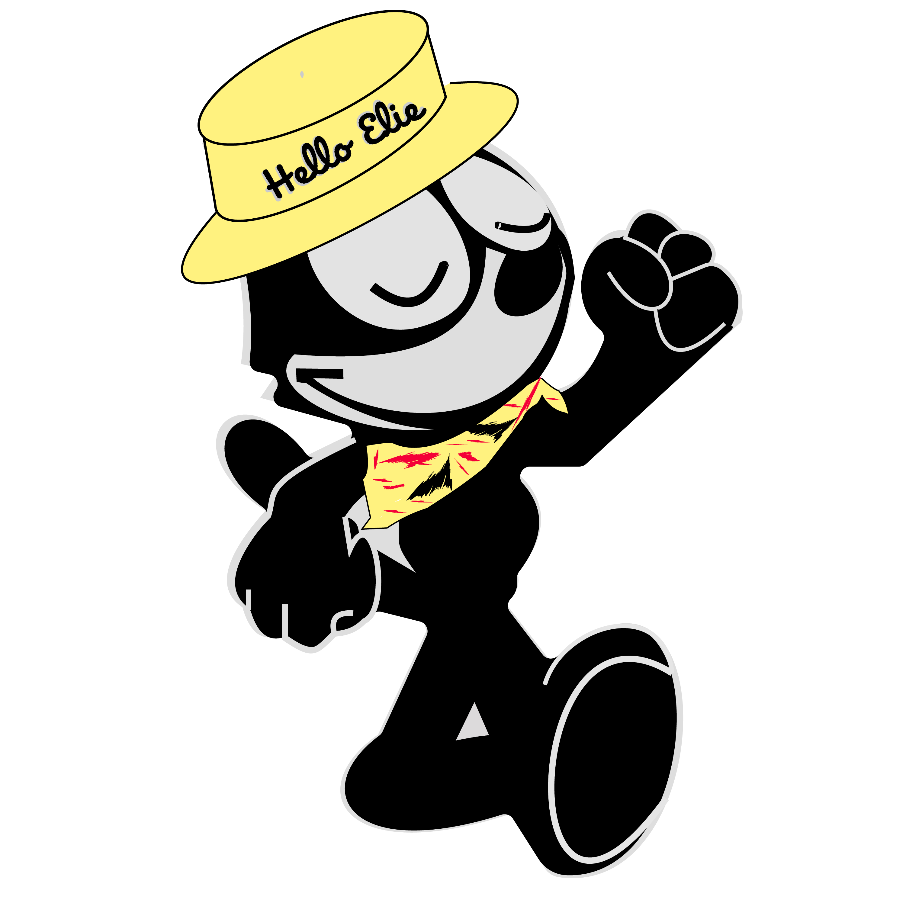

High School: Graduated Lower Canada College (2014) - moved to Ontario, graduated from Trinity College School
Summer : I worked @ the sleep-away Y Country Camp (YCC) as a camp-wide sailing instructor and bunk councilor in the ridgeside unit (10-11 year olds). I helped ensure the safety of the waterfront as a bronze-med, bronze cross and first aid certified staff and I got to spend the summer teaching kids how to sail.
At the end of the summer, I enrolled @ McGill University to study Political science and Philosophy - I wanted to go to Law School.
I joined the McGill Redmen Rugby Team and tried to figure my life out.
I realized that law school wasn't for me and capital markets had peaked my curiosity - I switched majors to Economics.
Summer: I worked @ sleep-away Camp B'Nai Brith (CBB) as a sailing instructor and councilor, again for kids aged 10-11. The challenge of this summer was that some kids were special needs, at times it tested my patience but it was truly rewarding.
I started figuring out my way to capital markets, I started tutoring business, statistics and econommics for Prep Academy Tutors.
Took my first Computer Science Class.
Started Djing Professionally @ Blizzarts
As the summer approached, I fell into an opportunity to work for a prominent portfolio manager at CIBC in Montreal as an equity research intern producing comparative reports for stocks of interest. I also co-authored a report about block-chain technologies during my time there.
As the summer ended, one of my bosses Cordell had finally gotten through to me how important computer science is.
Began to develop notariety around Montreal - began djing more and at several venues weekly.
I declared a minor in Computer Science and finished off my Economics Major.
While interviewing at a hedge fund, I was presented with an opportunity to co-found a supply chain startup. I was in charge of software development/Finance and my partner for sales and business development. As I became more familiar with the business, we split the operations tasks. We were able to secure several large institutional clients and grew the business extremely quickly. I brought on a developer and, as the operations requirements grew, I took on more of a product manager role. Over the 18 months that I was there, sales grew over 7 figures while maintaining above the industry average net profit margin.
Started getting opportunities in djing to open up for major headliners such as Roy Woods, Kweku Collins, Pressa and several more. I also began sharing
Continued taking computer science classes towards my minor while working full time on the startup.
Applied and was selected to be on Carnival Committee - a group of 14 students with a budget of 250k who coordinate and manage two weeks of team competitions for 1000+ students while raising funds for the Canadian Cancer society. That year, we were able to donate over 55k CAD. Time management skills were pushed to the brink of collapse.
Met Kyle Rubenok at a Carinval event. He told me that he was a Program Manager intern at Microsoft. I asked him if he would explain what it was to me over coffee.
Realized that I wasn't mature enough for the startup life and wanted to learn more before venturing off on my own.
Leetcode grind and Product Management research while slowly exiting the startup.
August: Applications for new grad roles open.
Djing has officially taken a backseat.
If you know, you know
Received an offer to join the 2020 Uber APM Program.
COVID-19 hits Canada
Graduated McGill - Double Major: Computer Science & Economics
Finished my website
Casual Leetcode Practice
Start planning my move to SF, brainstorming side projects, working out.